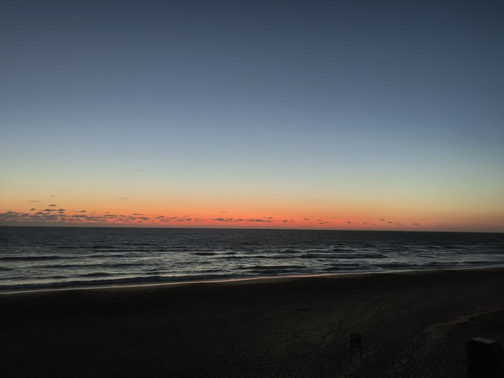
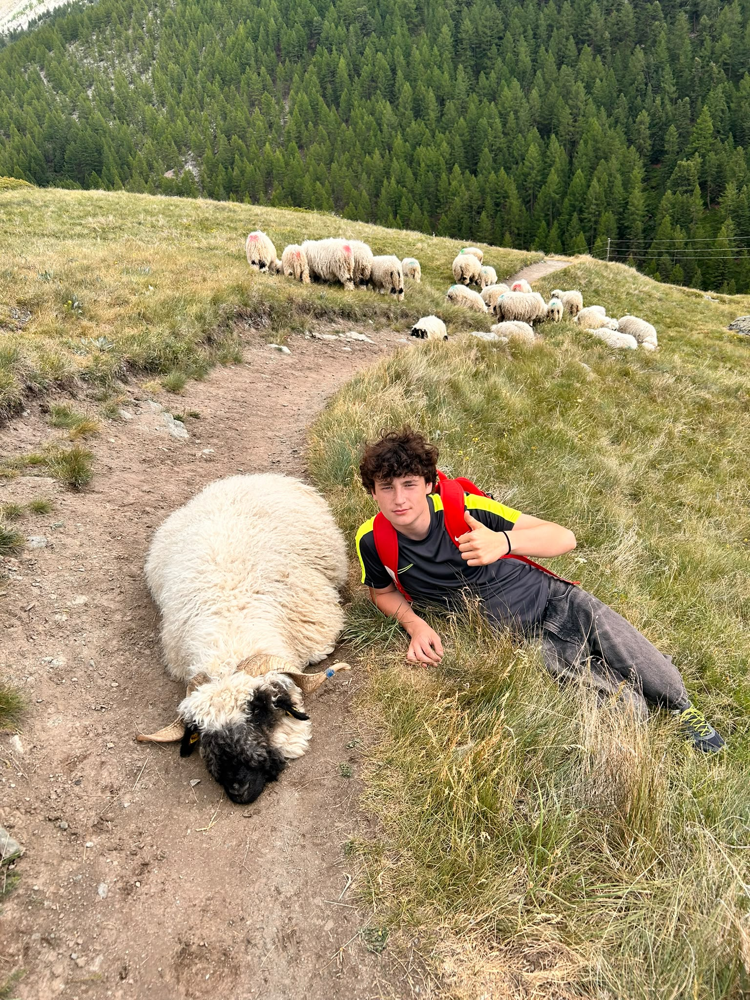
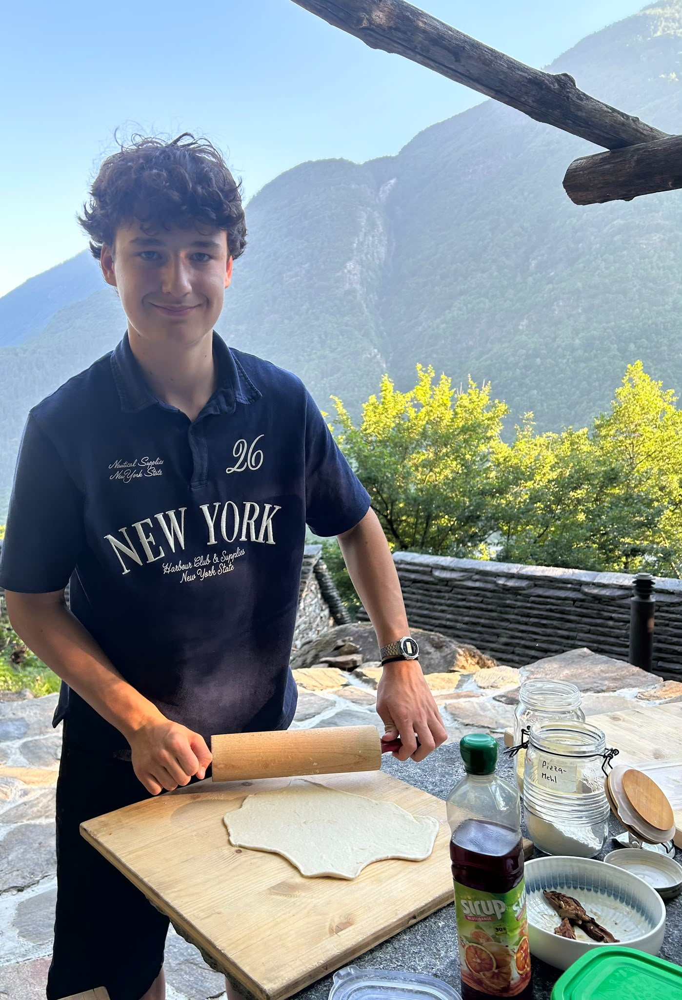

In meiner Freizeit beschäftige ich mich vor allem mit Musik und Sport. Sport hat für mich einen sehr grossen Stellenwert, weil ich mich gerne austobe und an meinen persönlichen Bestleistungen arbeiten möchte. Dabei ist mir die Sportart nicht so wichtig – von Fussball über Leichtathletik bis hin zu Turmspringen oder Parkour probiere ich vieles gerne aus. Es gibt viele Dinge, die ich gerne mache, aber eines meiner grössten Hobbys ist das Gitarrespielen. Ich spiele bereits seit über fünf Jahren Gitarre, und mir kommen immer wieder neue Ideen in den Sinn, welche Lieder oder Stücke ich als Nächstes spielen könnte. Durch das Gitarrespielen kommen meine Kreativität und meine innere Ruhe zum Vorschein. Es hilft mir meistens dabei, abzuschalten und mich wieder glücklich zu fühlen. Generell höre ich sehr gerne Musik. Sie macht mir viel Spass und hilft mir dabei, meine Gefühle besser auszudrücken. Ausserdem verbringe ich gerne Zeit in der Natur und entdecke neue Orte. Zum Beispiel gehört das Wandern zu meinen Lieblingsbeschäftigungen, wenn ich draussen bin. Ich finde es sehr schön, und es hilft mir, zur Ruhe zu kommen – egal, was gerade los ist.


